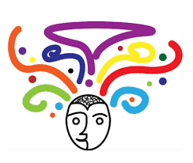

INTRODUCCIÓN
La orientación educativa es clave para el ámbito de formación para guiarnos a nosotros como estudiantes en el desarrollo personal, social y en el vocacional el objetivo que tiene es el de guiar y apoyar para tomar las mejores decisiones para nuestro futuro, la orientación educativa no solo se enfoca en lo académico como se menciona tambien en lo social y personal sale un componente fundamental que es la orientación personal y emocional,también es la orientación vocacional que esto nos ayuda a definir nuestros intereses profesionales para poder seleccionar una carrera que nos convenga. La orientación educativa toca varios temas como la inclusión educativa que nos habla que busca integrar yasegurar una formación integral e igualitaria.
